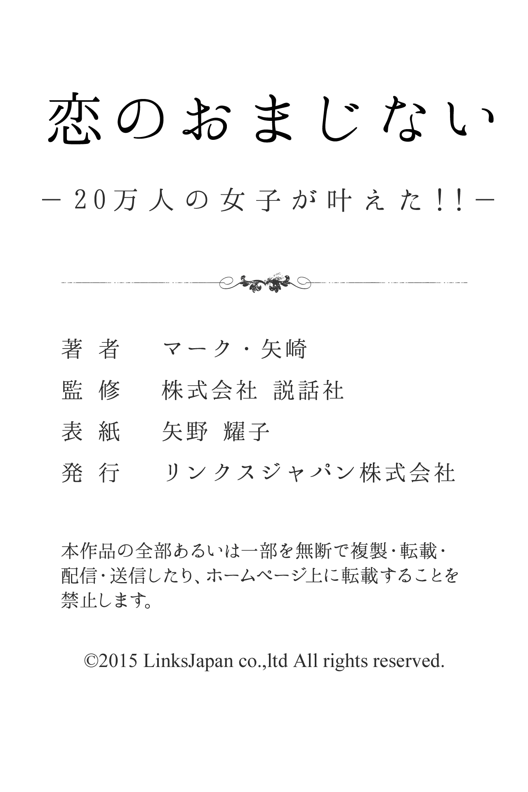

| 20万人の女子が叶えた！！恋のおまじない (得トク文庫) | |
| マーク・矢崎 | |
| (2015) | |
1 、はじめに
この本を手にとったあなたは、きっとこれまでに「おまじない」をしたことがあるはずです。
え？ 心当たりがないって？
いえいえ、そんなことはないはず。
神社でお参りをしたり、何らかのお守りをもっていたりすることだって、実は立派なおまじないなのですよ。
そう、おまじないは、私たちのほんの身近に、いつもあるものなんだ。
また、今のあなたは、恋に関する願望や何らかの悩みがあるようだね。
そんなあなたのために役立つおまじないを、今回はたくさんそろえてみたんだよ。
きっと、今の自分に合ったシチュエーションで「使えるおまじない」が見つかるはず。
ぜひ、楽しみながら、試してみてほしいな。
マーク・矢崎
2 、出会い・縁を呼び込むおまじない
モテモテになれる「愛の女神ビーナス」のおまじない
バラの花びらをベッドに散らし、その上に横になって「愛の女神ビーナスさま、どうぞ私をあなたのように、美しい人へと変身させてください。
そして、できれば水瓶座のガニメーデのような人と恋が実りますように」と祈ろう。
そのままひと晩眠りにつけば、モテモテになれること間違いなしだよ。
異性から注目をあびる「愛を伝えるバラの精」のおまじない
月が見える金曜日の晩、バスタブにバラの花びらを浮かべ、その中へ体をゆっくり沈めて「愛を伝えるバラの精よ、あなたが虫たちを甘い蜜の香りで誘うように、私を周囲の異性たちを引き寄せる、甘い魅力で包んでおくれ」祈ろう。
そして翌日、白檀の香りを身につけて出かけると、多くの異性から注目を浴びることだろう。
魅力をアップする「月の光」のおまじない
魅力を上げたいあなたは、満月の晩、全身に月の光を浴びて「月の神さま、あなたの光のベールを私にまとわせてください。
周りが私の魅力に気づいてくれますように」と、お願いしよう。
できれば、素肌に月の光を浴びると効果的なので、全裸でなくても、できるだけ露出の多い服装を選ぶといいよ。
身も心も美しくなる「着せ替え人形」のおまじない
着せ替え人形に、あなたのセンスで洋服を着せ、夜寝るときに枕元に置いておく。
そして、布団に入り「神さま私を○○ちゃん（人形の名前）のようなステキな人にしてください。
明日、私が生まれ変わっていますように」とお願いして眠ろう。
きっとあなたの願いは聞き届けられて、身も心もさらに美しくなれるよ。
清楚な魅力がアップする「白い鉄砲ユリ」のおまじない
部屋に、白い「鉄砲ユリ」の花を飾りましょう。
もしも、ユリのシーズンが終わっていたら、絵や写真でもかまいません。
ユリの花に向かって「あなたの静かな清純さを私に分けてください。
せめて○○さんの前では、自分も白いユリになれますように」と祈ろう。
そうすると、あなたに清楚な魅力が芽生えてくるはずだからね。
ステキな出会いが訪れる「オカメインコ」のおまじない
小鳥店に行って「オカメインコ」という鳥を探してみよう。
この鳥は、とても仲が良い鳥で、見つけるだけでもツキがあるけれど、うまくすると小鳥同士のキッスを見られるはず。
そのとき「ラビングバードよ、私と○○さんの間にも、楽しい愛を運んでおくれ」と、祈ってごらん。
きっと、ステキな出会いが訪れるよ。
ステキな異性と出会える「金の星」のおまじない
ステキな相手に出会える、金の星のおまじない。
まず、厚紙を星形に切り抜き、その星にあなたの名前を赤いクレヨンで描いてみよう。
そして、その上から金色の折り紙を貼り、星形にキレイに整えてごらん。
それを部屋の北の壁に貼って、星に向かってお祈りすれば、きっとステキな異性と出会えるはずだよ。
運命の人が現れる「月の女神」のおまじない
満月の晩、月の光が差し込む窓辺で、月の光を胸の辺りに当てながら「月の女神さま、私の恋人になるべき人と早くめぐり合わせてください」と祈ってみよう。
そして、翌日から周囲の異性に注目して、よくチェックしてごらん。
そうすれば、次の満月になるまでに、運命の人があなたの元にやってくるはずだよ。
恋が訪れる「風の妖精」のおまじない
グリーンの多い公園や森などに出かけて、草の葉や柳の小枝が自然に結ばれているのを探してみよう。
見つけたら、それを強くギュッと結び直しながら「いたずらものの風の妖精よ、私にステキな恋を運んでください」と、呪文を唱えてごらん。
きっと近いうちに、あなたに楽しい恋が訪れるだろう。
ステキな異性が現れる「青いヒアシンス」のおまじない
青いヒアシンスの球根を用意しよう。
そして、それに「ガニメーデ」という伝説の美少年の名前をマジックなどで書いて、水栽培にして大切に育ててごらん。
その花が咲くまでには、ギリシャの神々を魅了したガニメーデのような、中性的な美しさをもつ、ステキな異性があなたの前に現れるはずだよ。
幸運な出会いが訪れる「愛の聖女バルバラ」のおまじない
実のなる木の花のつぼみのついた枝に、あなたの名前を朱色の文字で書いた「たんざく」を結びつけよう。
そして「愛の聖女バルバラさま、このつぼみがやがて花開き、大きな実をならすそのときまでに、私に幸せの実を実らせてくれる好きな人が現れますように」と祈れば、きっと幸運な出会いが訪れるよ。
ステキな恋が転がり込む「金の鈴と銀の鈴」のおまじない
ステキな恋を夢見ているあなたは、まず、金の鈴と銀の鈴をひとつずつ用意しよう。
そして、ふたつの鈴を、赤い糸で結んでペアにして、自分の着ている洋服の左の腰の辺りに、安全ピンなどでつけて街を歩こう。
そのうえで、街を歩きながら異性をよくチェックしてごらん。きっとステキな恋が転がり込んでくるよ。
恋が授かる「鏡の中の自分」のおまじない
恋が授かるおまじない。まず、鏡の前に赤いバラを一輪飾り、鏡の中の自分の姿を見つめながら「聖淑女バルバラさま、私にステキな恋をお授けください」と、素直な気持ちで祈ろう。
そして、翌日から君の周りにいる異性を、しっかり観察してごらん。
「この人いいな」と思える、ステキな相手が現れること間違いなしだよ。
ステキな人が現れる「スイセンの球根」のおまじない
恋の予感を楽しみたいあなたは「スイセンの球根」に「ＡＲＴＥＭＩＳ」という文字を、銀のマーカーペンで書いてみよう。
そして、庭などに小さな穴を掘って、その穴の中に月桂樹の葉を敷き、スイセンの球根を埋めるんだ。
その球根を大切に育てると、ステキな人が現れて、期待通りの恋のときめきを感じられるはずだよ。
ステキな人と出会える「月の女神イシス」のおまじない
ステキな人と出会いたいと思っているあなたは、まず、五円玉を用意しよう。
そして、その穴から月を覗いて「月の女神イシスさま、あなたの光で私を照らし、私の出会うべき恋人を、早く私に気づかせてください」と、祈ってごらん。
その月が次の満月になるまでに、きっとステキな人が現れるはずだよ。
ステキな恋がやってくる「枕もとにバラの花」のおまじない
ステキな恋がやってこない......と嘆いているあなたは、まず、いつも枕元にバラの花を飾っておくように心がけよう。
そして毎晩、バラの花を見つめながら「愛の妖精さん、私に恋心を運んでください」と、心の中で祈るんだ。
これを眠る前の習慣にすると、あなたの魅力が高まって、ステキな恋に出会えるはずだよ。
出会いを招く「生まれ年の五円玉」のおまじない
今、出会いが欲しい！ と思っているなら、太めの赤い毛糸をクサリ編みにして、少し長めのひもを作ろう。
そして、そのひもに、あなたが生まれた年に作られた五円玉を通し、カバンなどにつけてごらん。しばらくすると、あなたが作ったお守りに招き寄せられて、ステキな恋がやってくるよ。
理想の人が現れる「金のビーズ」のおまじない
理想の人と出会いたい、と思っているあなた。まず、金のビーズを糸に通して、それを輪っかにして、小さなブレスレットを作ってほしい。
そのブレスレットを、毎朝早く起きて、庭などにある「ひまわりの花」の首にかけ、そして夕方には外してお守りにしよう。
しばらく待っていれば、あなたの前に理想の異性が現れるだろう。
ステキな恋ができる「神社の境内」のおまじない
近くの神社の境内に行って、その地面に木切れなどでいいから、ハートの絵を描いてこよう。
そして次の日、その絵が残っていたら、その絵の周りの土を持って帰って、お守りにしよう。
もしも、残っていなかったら、何度チャレンジしてもかまわない。そのお守りを持っていれば、きっとステキな恋ができるはずだよ。
ステキな異性と出会える「水鳥の白い羽根」のおまじない
海辺や池へ行って、水鳥の白い羽根を拾い、それに緑のマジックで「ＩＳ☆ＩＳ」と書いて水に浮かべ、ステキな恋を祈ってごらん。
きっと胸がキュンとときめくような、ステキな人と出会えるはずだよ。
３ 、きっかけ作り＆恋成就をもたらすおまじない
上手におしゃべりができる「和歌カード」のおまじない
好きな人とうまく話せないあなたは「しのぶれど 色にでにけり 我が恋は ものや思うと 人の問うまで」という和歌をカードに書いて、それをお守りにして持っていよう。
そして、好きな人と会ってドキドキしたとき、この和歌を心の中で唱えてごらん。
きっと、胸のドキドキはおさまり、上手におしゃべりができるはずだよ。
好きな人の前で「緊張を解くぬいぐるみ」のおまじない
好きな人の前に出ると、緊張して顔が見られない......という人のためのおまじない。
ぬいぐるみに好きな人の名前をつけて、毎朝「○○さん、おはよう」と声をかけてごらん。
すると、だんだん好きな人に話しかける感覚がつかめてきて、やがて相手の前でも緊張しなくなり、自分から声もかけられるようになるはずだよ。
好きな人と一緒にいるときの「緊張を解く呪文」
好きな人と一緒にいると緊張してしまう......というあなたは、まず、相手を遠くから見つめて「あの人は空で私は小鳥。あの人は海で私は魚。あの人は大地で私は花。あの人が平気になれますように」という呪文を唱えよう。
そうすれば、きっと好きな人の前で緊張することなく、自然な態度で振る舞えるはずだよ。
好きな人に素直になれる「安鎮心」のお守り
好きな人に素直になれない、そんなあなたのためのおまじない。
まず、青い紙に筆ペンで「安鎮心」という文字を書き、それをお守りにして持っていよう。
そして、好きな人から話しかけられたときなど、心の中で「あん・ちん・しん」という呪文を何回もくり返し唱えよう。
そうすれば、きっと素直な態度で接することができるはずだよ。
好きな人の気持ちがわかる「愛のキューピット」のおまじない
好きな人の気持ちが見えない、というあなたは、相手の姿を見つめ「私を守る愛のキューピットよ、好きな人のことを話しておくれ」と、心の中で祈ろう。そのうえで、好きな人と友だちが話している会話を注意深く聞いていると、不思議なパワーが働いて、君の知りたいことが聞こえてくるはずだよ。
素直な会話ができる「天ノ邪鬼」のおまじない
好きな人に対して、素直になれないときのおまじない。
まず、紙を人の形に切って人形を作り、それに「天ノ邪鬼」と書くんだ。
そして「私の心に住むアマノジャクよ、私の体から出てうせろ」と呪文を唱え、それを火で燃やしてしまおう。
きっと心が軽くなって、ステキなおしゃべりができるだろう。
ふたりの運命を結ぶ「赤い糸の釣り針」のおまじない
釣り針のテグス（糸）を外し、代わりに赤い糸を５センチほど結びつけよう。
そして、好きな人とエレベーターの中などで会ったとき、その針を相手に気づかれないように、服などに引っかけるんだ。
ほんのわずかの間でも、好きな人の体に引っかかれば、ふたりの運命の糸が結ばれたことになって、縁が強まるよ。
好きな人と出会える「赤いカラークリップ」のおまじない
まず、赤いカラークリップを用意しよう。
そして、それを曲げてハートクリップを作り、好きな人が写った写真の上にそれをとめてごらん。
そして、その写真をもって、好きな人が行きそうな場所に出かけ、相手の姿がないか、よく探してみよう。
もしいなくても、しばらく待っていれば、きっと好きな人と出会えるはずだよ。
好きな相手と出会える「青い紙」のおまじない
青い紙に人形の形を描いて、その真ん中に、あなたが会いたい好きな人の名前を書いてみよう。
その紙を、部屋の北の壁に、赤いマチ針でとめておいてごらん。
そして、好きな人の住む街や相手の通う通勤・通学路を、暇を見つけて歩いてみると、きっとその相手と出会えること請け合いだよ。
恋のきっかけをつかむ「アキストキネス」の呪文
仕事や外出先からの帰り道で気になる人がいたら、適度な距離をとって、そっとあとをつけていこう。
そして、相手の後ろ姿に向かって「アキストキネス」という呪文をつぶやいたら「すみません......」と、さり気なくつまずいたフリをしてぶつかるんだ。
すると、それ以降相手はあなたを意識し始め、恋のきっかけをつかむことができるよ。
好きな人と会話が生まれる「ラン・ロン・ロン」の呪文
会社の玄関やお店の入り口などで、好きな人とすれ違ったとき、一歩立ち止まって「ラン・ロン・ロン、私の気持ち、好きな人に伝われ」と、心の中でつぶやいてみよう。
そうすれば、きっと相手はあなたの存在に注目してくれるようになり、その後、一緒に話したり出かけたりできるチャンスが生まれるよ。
ふたりの距離が縮まる「プレゼント」のおまじない
クリスマスやバレンタインを利用して、いつまでも残るような物を好きな人にプレゼントすることを考えよう。
そして、そのプレゼントをひと晩抱いて眠り、プレゼントに向かって「好きな人に他の人を近づけないでね」とお願いするんだ。
そうすると、相手はあなたを強く意識するようになり、ふたりの距離が縮まっていくはずだよ。
両想いの「リンゴの神さま」のおまじない
リンゴに好きな人の名前を書いて「リンゴの神さま、○○さんの気持ちを教えてください」とお願いしながら、縦に切ってみるんだ。
そして、その切り口を見てごらん。
もしも、タネが切れていたら、相手はあなたを友人としか見ていない。
でも、うまくタネをよけて切れたら、相手も君が好きということだよ。
相手が振り向いてくれる「朝露」のおまじない
早起きをして、バラの花に溜まった朝露を集め、それを筆につけて便箋に「○○さん好き」と書こう。
そして、その便箋を乾かしたら、好きな人に向けて手紙を書くんだ。
これは、年賀状や暑中見舞いのハガキでもＯＫ。
朝露で書いたあなたの本音が伝わって、きっと相手は振り向いてくれるだろう。
好きな人と仲良くなれる「微笑み返し」のおまじない
好きな人と仲良くなりたいあなたは、みんなと一緒にいるときも、できるだけ相手のほうを見ているようにしよう。
そして、好きな人があなたの視線に気づいて振り向いたとき、照れずに笑顔で微笑み返してごらん。
そうすると、相手はあなたのことを強く意識するようになって、君にだけには心を開いてくれるようになるはずだよ。
好きな相手に誘ってもらえる「頭脳線と感情線」のおまじない
好きな人に誘ってほしいあなたは、右の手のひらの頭脳線と感情線の間に、赤いフェルトペンで星のマーク「＊」を描いてほしい。
そして、その手のひらを好きな人に向けて手を振り「おはよう」とか「さようなら」と、明るくあいさつをしてごらん。
そうすれば、きっと近いうちに、相手はあなたを誘ってくれるはずだよ。
好きな人と会話ができる「エノクさま」のおまじない
好きな人と会話ができずに悩んでいるなら、白い紙に青いフェルトペンで「ＥＮＯＫ ＮＥＫＯ ＯＫＥＮ ＫＯＮＥ」の護符を書いて持っていてごらん。
そして、相手を見つけたら「エノクさま、○○さんとうまく話せますように」と祈ってから、さり気なく接近していくんだ。
きっと、楽しくおしゃべりができるはずだよ。
好きな人に意識してもらえる「マスコット人形」のおまじない
好きな人の髪の毛をマスコット人形に縫い込み、心臓の部分に、赤いフェルトのハートをつけよう。
そして、金曜日の夜、赤いロウソクをともし、赤いマチ針でハートを突きながら「汝を突くは我にはあらず。
ただアスモーデが、汝の心に我が恋を伝えんとするがためなり」と唱えよう。
そのマスコットをバッグなどに入れておけば、きっと相手はあなたを今まで以上に意識してくれるよ。
相手をその気にさせる「左手の薬指」のおまじない
会社の飲み会などで、好きな人の隣の席になったとき、酔ったフリをして、さり気なく相手の左手の薬指をにぎってしまおう。
左手の薬指は、ハートのシンボル。だから、あなたは好きな人のハートをにぎったことになるんだ。
すると、相手は急速にあなたへの想いが募り、やがてアプローチをかけてくるはずだよ。
恋成就の「玉子焼き」のおまじない
香辛料の「セージ」をひとつまみ混ぜて、玉子焼きを作ろう。
そして、その玉子焼きをさり気なく、好きな人にすすめて食べてもらうんだ。
この玉子焼きを食べた相手は、あなたの言いなりになること間違いなし。
もしも、気に入ってたくさん食べてくれるようなら、心の中で「私の恋人になれ」とつぶやけば、恋成就は間近だよ。
相手が距離を縮めてくる「エースとジョーカー」のおまじない
トランプのハートのエースとジョーカーを、向かい合わせに重ね合わせて「ジョーカーよ、私の好きな人を連れておいで」と言いながら、屋根の上へ投げ上げてごらん。
屋根の上に乗らないときは、屋根に向かって投げるだけでも大丈夫。
そうすると、好きな人のほうから、あなたとの距離を縮めてくるはずだよ。
理想の恋ができる「ピンクのカバー」のおまじない
好きな人と夢のような交際をしたい、と思っているあなたは、自分が憧れるラブストーリーの本に、ピンクのカバーをつけ、奥付の著者の名前を棒線で消して、代わりにあなたの名前を書いてみよう。
そして「私にステキなラブストーリーをつづらせてくださいと」祈れば、きっとその物語のような恋ができるよ。
好きな人に気持ちが伝わる「髪の毛１本」のおまじない
まず、あなたの髪の毛を１本抜いて、２階の窓や屋上などの高いところから、好きな人の住む家の方角に向かって、フッと吹き飛ばそう。
そして「好きな人の前で頑なな私の心が、相手にしっかりと伝わりますように」と呪文を唱えよう。
そうすれば、きっとあなたの気持ちは伝わることだろう。
相手から電話がかかってくる「電話テレパシー」のおまじない
まず、両手をこめかみのところに当てて、目を閉じよう。
そして、頭の中で好きな人が、自分に電話をかけてくるところを想像してごらん。
そして、眉間のところに意識を集中させて「○○さん電話かけてよ」と強く念じてみよう。
きっとあなたの願いは叶って、やがて相手から電話がかかってくるはずだよ。
好きな人に想いが届く「ツゲのくし」のおまじない
満月の晩、洗面器に水を張り、月の姿をその水面に映そう。
そして、映った月に「ツゲのくし」をつけるように水に浸し、そのくしで髪をときながら「月の女神ダイアナさま、あなたの月の光に乗せて、私の想いを○○さんの眠る窓辺へ伝えてください」と祈ろう。
きっとあなたの熱い想いは、好きな人の心に届くはずだよ。
好きな人とうまくおしゃべりができる「白い包帯」のおまじない
白い包帯に、赤いペンで好きな人の名前を書き、その包帯を左の手首に巻いて、その手首を右手でキュッとにぎりながら「○○さんとの仲が良くなりますように」と、お願いしてごらん。
そして、その包帯をしたまま、タイミングを見て好きな人に話しかけると、きっと上手におしゃべりができるよ。
好きな人から声をかけられる「傘をクルリ」のおまじない
朝、会社や学校などに行くために家を出るとき、傘を開いてそれをクルッと回し「愛の魔法使いメリーポピンズさま、どうぞ○○さんとこの傘で一緒に帰れますように、ビビディバビディブー」と呪文をかけよう。
すると、その日の帰りに、好きな人から声をかけられたり、誘われたりするはずだよ。
両想いになれる「３本の毛糸」のおまじない
赤、青、緑の３本の毛糸を、三つ編みに編んでひもを作ろう。
そして「○○さんと仲良くなれますように」とお願いしながら、そのひもを左の手首に巻きつけて結んでおこう。
もちろん、あなたも自分のいいところを、積極的に好きな人へ見せてアピールすること。そうすれば、きっとふたりの距離は縮まり、両想いになれるはずだよ。
好きな人から想いが届く「三日月の晩」のおまじない
新月から満月へ向かう三日月の晩、月の光を体に浴びて「好きな人の心を教えてください」と、月に祈ろう。
そして、次の満月の日が晴れなら、好きな人の気持ちはＹＥＳ。
満月の日が曇りか雨なら、気持ちはＮＯだと判断して。
このおまじないの結果が良ければ、次の新月までに、好きな人からの想いも届くよ。
好感度が上がる「時の神クロノス」のおまじない
時計の文字盤を、指で時計と逆回りに、うずを描くようになぞりながら「時の神クロノスさま、どうぞ私の時間をお戻しください。願わくは○○さんの心の中の、私の悪い印象が生まれぬときまで」という呪文を唱えよう。
きっと、あなたの悪い印象は好きな人の心の中から消えて、より好感度が上がっていくはずだよ。
好きな人と急接近できる「赤いハートマーク」のおまじない
好きな人がいるあなたは、まず、左手のくすり指に、赤いフェルトペンでハートのマークを描こう。
そして、好きな人にぶつかったフリをして、その左手の薬指で好きな人の体に触れるんだ。
そうすると、ふたりの間に縁が生まれて、きっと好きな人と電車やバス、エレベーターの中などで急接近できるはずだよ。
好きな人に興味をもたれる「ふたつに割ったリンゴ」のおまじない
好きな人の名前を紙に書き、ふたつに切ったリンゴの間にそれをはさんでごらん。
バーベキューの串などで、それを貫いてリンゴが離れないようにとめて、小鳥が集まるところにそのリンゴを置いて、ついばんでもらおう。
そうすると、好きな人があなたに興味を示し、誘われるようになること間違いなしだよ。
好きな人が意識してくれるようになる「逆さ読み」の呪文
好きな人がいるあなたは、相手の前にわざと出ていき、それでいて意識的にソッポを向くようなしぐさをしてみよう。
そして、横を向いたそのとき、小さな声で「○○さん大好き」という言葉を、反対から逆さ読みで言ってごらん。
きっと好きな人は、あなたのことを気にするようになるはずだよ。
相手からコンタクトがある「好きな人の写真」のおまじない
まず、あなたが大切にしている好きな人が写っている写真を用意しよう。
そして、相手の顔の部分を、赤いフェルトペンで書いたハートで囲んでみるんだ。
そして、その写真を月の光にかざし「月の女神さま、私と好きな人との恋をお照らしください。○○さんから連絡がきますように」とお願いしよう。
きっと、近々相手からコンタクトがあるはずだよ。
好きな人が何かと気にかけてくれる「俳句」の呪文
好きな人がいるのに、気持ちを伝えられないあなたは、相手の後ろ姿を見つめながら「風に舞う萩の下葉の露宿る月」という俳句を、小さい声で３度唱えてみよう。
これを毎日くり返していると、好きな人はいつしかあなたの存在に気がついて、何かと気にかけてくれるようになるはずだよ。
好意を抱かせて「相手を振り向かせる」呪文
好きな人がいるのに、なかなか振り向いてもらえないあなたのためのおまじない。
そんなときは、好きな人の後ろ姿に向かって「我は虎、いかになくとも犬は犬、獅のはがじめ、恐れこらやめ」という呪文を唱えてごらん。
そして、それを習慣的にくり返そう。そうすると、やがて相手はあなたに好意を抱いてくれるよ。
アプローチ大成功！「接近のばんそうこう」のおまじない
好きな人に接近したいなら、その相手のイニシャルを、左の手首の脈が打っているところに書いて、文字の上にばんそうこうを貼っておこう。
このばんそうこうを、ずっと貼り続けていると、好きな人と接近のチャンスが生まれるとともに、アプローチをすれば大成功すること間違いなしだよ。
思いが通じる「仲良しになれる青インク」のおまじない
好きな人と仲良しになれるおまじない。
会社や学校などで、相手のイスの背もたれの裏に、誰にも気づかれないように青いインクで、あなたのイニシャルとルーン文字のハガル（＊）の文字を書こう。
そして、２、３日様子を見守っていてごらん。きっとあなたの想いが通じて、好きな人から話しかけてくるよ。
気持ちが伝わる「朝のあいさつ」のおまじない
好きな人と毎朝顔を合わせたら「おはよう」と、あいさつをするようにしよう。
このとき、左手の親指を折って、小さく手を振るとあなたの気持ちが好きな人に伝わるはずだよ。
でも、噂や冷やかしにあうこともあるので、同じように周囲の人にも明るくあいさつをしておこう。
ただし、手を振るのは本命の好きな人だけだよ。
気持ちを伝える「影踏み」のおまじない
好きな人と仕事などの行き帰りに顔を合わせたら、迷わずコクリと会釈をしよう。
そして、できるだけ「こんにちは」とか「さようなら」と、あいさつをしてほしい。
その際、気づかれないように好きな人の影の「頭の部分」を踏みながら「あなたの気持ちを私に伝えて」と心の中で念じると、やがて相手から声をかけてもらえるはずだよ。
好きな人に振り向いてもらう「アモン」のおまじない
好きな人に、振り向いてもらうおまじない。
好きな人が、あなたのほうに視線を送ったとき、心の中で「アモン」という言葉を唱えながら、相手に流し目を送り、ニッコリと微笑んでごらん。
すると、好きな人はあなたの笑顔に大いに惹きつけられて、それまで以上に興味や関心をもってくれるはずだよ。
好きな人を振り向かせる「鏡に映った自分」のおまじない
あなたが目標とする人（憧れのタレントや魅力的な友人など）の写真を、鏡の前に飾っておこう。
そして、毎朝顔を洗うとき、鏡に映った自分の顔を見つめ「あなたはキレイ、昨日よりまたキレイになった」と、ささやきかけてごらん。
これを毎日くり返すと、あなたはグングン魅力的になり、好きな人を振り向かせることができるはずだよ。
会うチャンスに恵まれる「マスコットに青いリボン」のおまじない
好きな人と会う機会を増やしたいあなたは、まず、相手とどこか似た雰囲気のキャラクターのマスコットを見つけよう。
それに、好きな人の名前を書いた、青いリボンを結んでおくんだ。
そして、そのマスコットをいつも身につけていれば、不思議なほどに好きな人と会うチャンスが増えるはずだよ。
好きな人に注目される「想いを伝えるカード」のおまじない
好きな人に注目されるきっかけを作るには、暑中見舞いや年賀状、クリスマスや誕生日のカードの端に、緑のインクで｢Ｈｏｗ ａｒｅ ｙｏｕ？｣という文字を書き、最後に赤いハートを描いて相手に送ろう。
すると、あなたの想いが伝わり、相手はあなたのことが気になって仕方がなくなるはずだよ。
ふたりが結ばれる「ペアのぬいぐるみ」のおまじない
まず、男の子と女の子のペアのぬいぐるみを買おう。
「あなたたちを引き離すのは私の本意ではありません。
あなたたちが互いに引き合って、私と好きな人とを結んでくれますように」と呪文を唱え、異性の人形のほうを、好きな人にプレゼントしよう。
ペアのぬいぐるみのパワーで、ふたりはやがて結ばれるはずだよ。
好きな人からアプローチがある「猫の女神バスト」のおまじない
春と秋は、愛を語らう猫の鳴き声が聞こえる季節。
好きな人との恋を育みたいあなたは、猫の鳴き声を聞いたら「愛を伝える猫の女神バストさま、私と好きな人との間にも恋の季節をお与えください」と祈ろう。
すると、やがてあなたの元にも、好きな人からのアプローチがあるはずだよ。
相手に「自分を好きになってもらう」呪文
好きな人に、自分を好きになってほしいという気持ちは、恋をしている人に共通のもの。
そんなときは、ふたりきりになれた際、好きな人の目を見て、心の中で「カフェ・カシタ・ノン・カフェラ・エト・フブリアニ・フィリエ・オムニバス・サイズ」という、おまじないを唱えよう。
そうすれば、きっと相手に振り向いてもらえるよ。
相手を夢中にさせる「ひまわりの種」のおまじない
ひまわりの種に、水星のマーク「☿ 」を書いて「○○さんの気持ちを教えてください」と願って、庭などに植えよう。
好きな人があなたに気があれば、その種はしっかり芽を出してくれるはず。
そして、そのひまわりをしっかり育てて、大きな花を咲かせられれば、そのころ、好きな人はあなたに夢中になっているはずだよ。
ふたりの距離が縮まる「和歌」のおまじない
あなたの想いが、好きな人に通じるおまじない。
まずは、半紙に墨で「春の夜の夢ばかりなる手枕にかひなくたたむ名こそ惜しけれ」という和歌を書いて持っていよう。
そして、何かあるたびに、好きな人に接近する努力をすれば、きっとふたりの距離は着実に縮まっていくはずだよ。
気持ちが伝わる「２枚の五円玉」のおまじない
まず、あなたの生まれた年と、相手の生まれた年に作られた五円玉を見つけよう。
そして、その五円玉２枚をひとつに重ね合わせて、左手の親指と人さし指ではさみ、夜空に浮かぶ月にかざして、心の中で意中の人を想ってごらん。
そうすると、あなたの気持ちは相手に伝わるはずだよ。
恋心を芽生えさせる「バラの香り」のおまじない
青いフェルトで小さな袋を作り、その中に白檀のオイルを湿した脱脂綿と、ドライフラワーのバラの花びらを詰めよう。
そして、その袋の口をピンクのリボンで結んで、いつも胸ポケットやカバンなどに忍ばせておくんだ。
そのほのかな香りが相手に働きかけて、恋心を芽生えさせてくれるはずだよ。
意中の人に想いが伝わる「銀の指輪」のおまじない
銀の指輪の内側に、マジックなどで「ＡＲＴＥＭＩＳ」という文字を書き、その指輪を小さめの白い封筒に入れて、三日月の晩、月の光を受ける木の根元に埋めてごらん。
そして、次の満月の晩、それを掘り出して、封筒に青い毛糸を通して首からさげるんだ。
そうすると、意中の人に想いが通じるはずだよ。
好きな人と距離が縮まる「ロウソクの涙」のおまじない
ガラスのコップに水をくんで、その中に赤インクを混ぜ、赤い色水を作ろう。
次に、白いロウソクに火をつけて、溶けたロウのしずくをそのコップの中にたらそう。
そして、色水に浮いた「ロウソクの涙（しずく）」をハンカチに包んで持っていると、やがて好きな人との距離は縮まり、あなたの恋は叶うはずだよ。
好きになってもらえる「遠くに見える好きな人」のおまじない
お昼休みや会社帰りなどに、意中の相手の姿を窓や屋上から眺めて、遠くに見えるその小さな姿を、あなたの右手でつかむしぐさをしてみよう。
そして「あなたはもう私のもの」と、心の中でつぶやいてごらん。
そうすると、相手はこれまで以上にあなたのことが気になり、だんだん好きになってくるはずだよ。
意中の相手との恋を叶える「芽吹いたばかりの草の葉」のおまじない
意中の相手との恋を叶えたい人のためのおまじない。
まず、芽吹いたばかりの草の葉をひとにぎりほど摘んで、それを太陽の光に当てて庭やベランダなどで「干し草」を作ろう。
そして、それを布の袋に入れてお守りを作り、いつも持ち歩くんだ。
そうすると、あなたの恋は、きっと近いうちに実ることだろう。
想いが通じる「なでしこの花」のおまじない
あなたの想いが通じるおまじない。
まず「なでしこの花」を押し花にして、それを好きな人から届いたハガキ（年賀状や暑中見舞いでＯＫ）の、相手の名前の上に貼ってみよう。
もし、相手からのハガキがなければ、紙に相手の名前を書いたものでも大丈夫。
その紙をずっと大切にもっていれば、きっと想いは通じるはずだよ。
好きな人との縁が強まる「竹ひごの弓」のおまじない
竹ひごを曲げて、それに赤い糸を張って「弓」を作ってみよう。
そして、その弓の弦のところに、好きな人と自分の名前を並べて書いたアイアイ傘を書いた紙を貼ってごらん。
その作った弓を、自分の部屋に飾っておくんだ。そうすると、やがて好きな人との縁が強まり、恋は成就するはずだよ。
好きな人と接する機会が増える「金色の鶴」のおまじない
紫色のリボンを鉛筆に結び、その鉛筆で好きな相手の名前を、金色の折り紙に100 回書いてみよう。
もし、書ききれなくなったら、上から重ねて書いても大丈夫。
その折り紙で「鶴」を折って、それをお守りにして肌身離さず持っていよう。
すると、好きな人と接する機会が増え、やがて恋は叶うはずだよ。
好きな人と仲良くなれる「赤い折り鶴」のおまじない
赤い折り紙で「鶴」を折って、その右の羽根に好きな人の名前、左の羽根にあなたの名前を書こう。
そして「仲良くなれますように」と祈りを込めて、その折り鶴を火で燃やすんだ。
そうすると、あなたと好きな人との間に、しがらみやこだわりがなくなって、いつの間にか仲良くなれるはずだよ。
相手が振り向いてくれる「紙人形」の呪文
紙を人形の形に切って、好きな人の名前をそれに書いてごらん。
そして、その足のところに赤いマチ針を刺し「走り人その行く先は針の山、あとへ戻れよあびらうんけん」という呪文を唱え、その紙人形を机の引き出しなどの奥へしまっておこう。
そうすると、やがて相手は振り向いてくれるよ。
恋が実る「二枚の紙人形」のおまじない
紙で作った人形を２枚用意して、片方に好きな人の名前、もう一方に自分の名前を書こう。
次に、そのふたつの人形の頭のところに赤い糸を通して、糸を環に結ぶんだ。
そして、赤いマチ針を壁に刺して、その環を引っかけておけば、やがてあなたの恋は実ること間違いなしだよ。
ふたりの距離が縮まる「スポーツタオル」のおまじない
まず、何かを「教えてもらう」という名目で、好きな人とともに汗を流す機会を作ろう。
終わったあと「どうもありがとう」と言って、新しいスポーツタオルを好きな人に差し出すんだ。
好きな人が汗を拭いたら、そのあとあなたも自分の汗を拭い、ふたりの汗のしみ込んだそのタオルを、洗濯をしないで大切にもっていよう。
すると、ふたりの距離は着実に縮まっていくはずだよ。
ステキなカップルになれる「赤と黄色のチューリップ」のおまじない
机の上に、赤と黄色のチューリップを飾ろう。
そして、そのチューリップに向かって「みんなが私と○○さんとの仲を認めてくれるように、みんなが私たちの仲を邪魔しないように見ていてください」と、お願いをするんだ。
その花が枯れるまでには、ふたりは周囲に認められたステキなカップルになっているはずだよ。
相手に意識してもらえる「風の妖精ジュルフェさま」のおまじない
仕事や授業の休み時間、窓辺に立って、流れてくる風に髪をなびかせながら「風の妖精ジュルフェさま、あなたの流れる風に乗せて、私の想いを好きな人の心の中に吹き込んでください」と唱えよう。
そして、好きな人のほうを見て、サッと髪を手でかき上げよう。
すると好きな人は、これまで以上にあなたを意識するようになるはずだよ。
運命的な結びつきが強まる「ハート型の石」のおまじない
仕事場に好きな人がいるあなたのためのおまじない。
河原でハート型の石を探してきて、その石の右側にあなたの名前、左側に好きな相手の名前をリップクリームで書こう（イニシャルでも可）。
そしてその石を、会社の敷地か通勤の道すがらなど、ふたりが共通して通る場所に置くんだ。
そうすると、ふたりの運命的な結びつきが強まり、偶然の出会いが多くなるはずだよ。
意中の人に声をかけられる「揺れるバスの中」のおまじない
揺れるバスの中で、好きな人と隣り合わせに立ったら、こっそり相手の体の揺れに自分も合わせて揺れながら「フルベユラユラ、私の恋よ、好きな人に伝われ」と、心の中で呪文を唱えてごらん。
きっと近いうちに、その相手から声をかけられたり、誘われたりする出来事が訪れるはずだよ。
恋へと発展する「ハートのエース」のおまじない
トランプのハートのエースに、好きな相手の名前を書いて「好きな人との仲が発展しますように」と、お願いしてごらん。
そして、赤いマチ針をカードのハートの真ん中に突き刺して、机の前の壁などにとめておこう。
そうすると、徐々にふたりの距離は縮まって、恋愛関係へと発展していくはずだよ。
恋が成就する「無限大のマーク」のおまじない
赤い紙をハートの形に切って、金のマーカーペンで無限大のマーク「∞ 」を描きます。
次に、その無限大のマークの右の輪の中に相手の名前、左の輪の中にあなたの名前を書いて、そのハートを部屋の北側の壁に貼っておこう。
時間の経過とともに効果が現れ、きっと恋は成就するはずだよ。
相手が強く意識し始める「ハート型の４つの石」のおまじない
ハートの形の小さな石を４つ、河原や道端で拾ってこよう。
その４つの石に、赤いマジックであなたのイニシャルを書く。
そして、そのハート形の石を、好きな相手の家を囲むように、家の四隅に置いてくるんだ。
そうすれば、相手はあなたのことを強く意識し始め、だんだん好きになってくるはずだよ。
恋を叶える「緑と赤のヤッコさん」のおまじない
恋を叶えるおまじないを紹介しよう。緑と赤の折り紙で「ヤッコさん」を折ってほしい。
そして、赤いほうにはあなた、緑のほうには相手の名前を書き、銀の折り紙で折った船の上に乗せて飾っておくんだ。
ヤッコさんの不思議なパワーで、ふたりは楽しく過ごせる時間が増え、やがて恋は成就するはずだよ。
好きな人と両想いになれる「金と銀の星」のおまじない
好きな人と両想いになるためのおまじない。まず、金と銀の折り紙を星型に切り抜き、その星を貼り合わせてごらん。
そして、金の面には相手の名前、銀の面にはあなたの名前を書いて、バッグなどに忍ばせて持っていよう。
すると、あなたの気持ちが徐々に相手へ伝わって、やがて両想いになれるはずだよ。
4 、告白がうまくいくおまじない
告白を手助けしてくれる「バラのつぼみ」のおまじない
恋の告白を手助けしてくれるのは、バラのつぼみだと言われている。
告白を考えているのなら、好きな相手へのプレゼントを赤いリボンで結び、その結び目にピンクのバラのつぼみを一緒に結びつけてごらん。
そして、相手にプレゼントを渡しながら、素直な気持ちを伝えれば、きっと愛を受け入れてくれるはずだよ。
きっかけをくれる「告白のジョーカー」のおまじない
告白をするきっかけがないというあなたは、ゲームで使うトランプのジョーカーのカードを用意してほしい。
そして「何でもできるジョーカーさん、私の心を○○さんに伝えてください」と祈ろう。
そのトランプを使って、好きな人と一緒にゲームをするんだ。
そのあと、帰り際などに軽い感じで相手に想いを伝えれば、きっとうまくいくはずだよ。
告白がうまくいく「聖書の詩篇４章１節」のおまじない
聖書の詩篇４章１節の文句（私の義を助け守られる神よ、私が呼ばわるとき、お答えください。
あなたは私が悩んでいたとき、私をくつろがせてくださいました。
私を哀れみ、私の祈りをお聞きください）を唱え、心の中で「好きな人を愛する勇気を私にお与えください」と祈ろう。
そうすれば、きっと告白はうまくいくはずだよ。
告白のチャンスが訪れる「鳥の翼」のおまじない
紙を、翼を広げた鳥の形に切って、右の翼に好きな人の名前、左の翼に自分の名前を書こう。
それを真ん中からふたつに切って、相手の名前の書いたほうをお守りだと称して好きな人に手紙で送ろう。
ポイントは、封をするとき「小鳥さん、早くあなたがひとつになって、青い空へと飛び立てるように、好きな人をつれてきてください」と祈ろう。
そうすれば、近々告白のチャンスが訪れるよ。
告白が成功する「残った便箋」のおまじない
告白の手紙を送るときは、１枚目の便箋に想いをつづった文章を書いたあと、筆跡の残ったその下の便箋は自分の手元にとっておこう。
そして、最初の便箋を好きな人に出し、もう一方は、白い封筒の表に「ＡＲＴＥＭＩＳ」と書いて、月の光を浴びた庭などにある木の根元に埋めれば、きっと愛を受け取ってもらえて、告白は成功するよ。
5 、恋をうまく進展させるおまじない
ずっと一緒にいさせてくれる「ペアのキャラクター」のおまじない
男の子と女の子がペアになったキャラクターグッズを用意しよう。
次に、あなたと同性のキャラクターのほうを好きな人に贈り、異性のキャラクターはあなたがいつも大切に持っていよう。
そのキャラクター同士がお互い相手を引き合うように、あなたと好きな人もずっと一緒にいさせてくれるはずだよ。
交際が長続きする「金曜日のリンゴ」のおまじない
相手との関係に不安を感じているあなたのためのおまじない。
金曜日の晩、リンゴに好きな人の名前を書いて、青いリボンを結びつけよう。
そして、次の朝それを解いて、好きな人への贈り物に、そのリボンを結んでごらん。
きっとふたりの交際はうまくいって、長続きすること間違いなしだよ。
軽やかな会話が生まれる「小鳥のさえずり」のおまじない
好きな人とうまく会話を盛り上げられずに、困っている人のためのおまじない。
好きな人とデートのとき、小鳥のさえずりが聞こえたら「愛を語るハミングバードよ、私と好きな人のために歌っておくれ」と、祈ってごらん。
すると、ふたりの間に軽やかな会話が生まれるはずだよ。
相手がやさしく接してくれる「バラの一枝切り」のおまじない
バラの花を一枝切りにして、湯飲みなどに熱湯を入れ、その中にそのバラの枝を入れよう。
そして「愛の女神さま、この恋の真実をお教えください」と、好きな人を思い浮かべて祈ってごらん。
そのあと、すぐにバラの枝を熱湯から取り出し、冷たい水の入った花瓶にさして、自分の部屋に飾っておこう。
きっと相手は、今まで以上にやさしく接してくれるはずだよ。
恋人との夢が見られる「赤いワインと銀のスプーン」のおまじない
コップに赤ワインを入れ、赤いロウソクに火をともし、ロウのしずくを一滴、コップの中に落としてごらん。
そして、銀のスプーンでかき混ぜながら、あなたが夢見る恋人とのラブストーリーをつぶやき、そのコップを銀のスプーンを入れたまま、ベッドの下や枕元に置いておこう。
その晩に見る夢は、あなたが語った通りのものになるよ。
交際を長続きさせる「月夜の晩」のおまじない
満月の晩、夜空に輝く月を見つめ、次のおまじないを唱えよう。
「うつろいの月よ、私の友となれ。私と○○の間の恋が、汝のうつろいとともにあらんことを」。
このおまじないを、月が欠けて新月になるまでの間、毎日時間を決めて唱えるんだ。
この儀式の間は、極力、好きな人との接触を避けること。
そうすることで、きっとふたりの交際は長続きするはずだよ。
ふたりの仲を邪魔されない「小指のばんそうこう」のおまじない
好きな人との仲を邪魔されないためのおまじない。
まず、左手の小指のつけ根に、好きな人の名前を書き、その上にばんそうこうを貼っておこう。
そして、それを貼り続けている間は、友だちや誰からも邪魔されないで、あなたは好きな人との関係をよりスムーズに進展させることができるはずだよ。
絆が強まる「ミカエルとアナエル」のおまじない
カードに赤いハートを描き、その中にふたりの名前を書こう。
そして、赤いロウソクの灯りの下で、ローズの香りのお香を焚き、緑のロウソクを右手、青のロウソクを左手に持ち「ミカエルとアナエルよ、私の友となれ。願わくは私と○○さんの心が、ひとつに溶け合うように」と唱えながら、両方のロウソクを赤いロウソクの火で同時に火をともし、そのロウのしずくを混ぜ合わせるように、ハートの中にたらし込むんだ。
そのカードを、白いハンカチで包んで持ち歩くと、ふたりの心の絆はさらに強まるはずだよ。
相手の気持ちを留める「髪の毛１本」のおまじない
好きな人の気持ちを安定させるためのおまじない。
まず、相手の髪の毛を１本、あなたの髪の毛を１本、赤い絹糸を１本、それぞれをより合わせてひとつにし、その端をひと結びにしよう。
それをお守り袋に入れ、いつもバッグの中などに忍ばせて持ち歩いていれば、ずっと好きな人の気持ちは変わらないはずだよ。
ずっと好きな人と仲良くいられる「メビウスリング」のおまじない
ふたりで写した写真の裏に、メビウスリングのマーク「∞ 」を書いて、それを自分の部屋のかけ時計の裏に貼っておこう。
そして「時の女神さま、あなたの時間が流れる間、永遠にふたりの仲をお守りください」と、時計に向かって祈ってごらん。
あなたは、ずっと好きな人と仲良くいられるはずだよ。
相手の魅力が理解できる「笑顔の写真」のおまじない
好きな人の笑顔の写真を撮って、自分の部屋の鏡の前に貼ろう。
そして毎日、鏡を見るたびに「好きな人の笑顔がステキになりますように」とお願いするんだ。
すると、好きな人の魅力をもっと理解できるようになり、ふたりの関係も盛り上がっていくはずだよ。
好きな人の笑顔が見られる「ハヒフヘホ」のおまじない
好きな人の笑顔が見られる、楽しいおまじないを紹介しよう。
まず、相手の笑う顔を見たら「ハヒフヘホのハの字になれ」と心の中で、こっそりつぶやこう。
きっと相手は「ハハハ」と笑うようになるよ。ちなみに「ヘヘヘ」がよければ「ヘの字になあれ」とつぶやいてみて。
一度、試してほしいな。
ふたりの恋がふくらむ「風船を川に浮かべて」のおまじない
風船に赤いマジックでハートの絵を描き、その中に青いマジックで、あなたと相手のイニシャルを並べて書こう。
その風船をふくらませて、口を縛ったところを、もう一度緑のひもで縛り、川に浮かべて流してみよう。
風船が大きくふくらむように、きっとふたりの恋も大きくふくらんでいくはずだよ。
恋を応援してくれる「水瓶座のパワー」のおまじない
銀色の折り紙に青いマジックで、水瓶座「♒ 」のマークを大きく描こう。
そして、マークの上下の波型の間に、あなたと相手の名前を重ねて書いて、バッグなどに忍ばせてもっていてごらん。
水瓶座のパワーが宿った恋のこのお守りは、きっとあなたの恋を応援し、いつも見守ってくれることだろう。
婚約を促す「左手の薬指に赤い毛糸」のおまじない
左手の薬指に、赤い毛糸を巻いて結んでおこう。
このままでは恥ずかしい場合は、その上にばんそうこうを貼って隠せばいい。
左手の薬指は、心臓と直結していると言われ、この指を縛ることが「心を縛る」ことになる、特別な指なんだ。
もしも、恋人との婚約を望んでいるのなら、ぜひ試してほしいな。
結婚願望を募らせる「ウエディングケーキ」のおまじない
結婚式のウエディングケーキのおすそ分けをもらってこよう。
そして「北風よ起これ、南風よ来たれ。我が心の園を吹きて、その香りを広く散らせ。我が愛するものが心の園に入りて、その良き実を食べるように」と、心の中で唱えるんだ。
そのケーキを恋人に食べさせれば、あなたと結婚式をあげたくなるはずだよ。
恋人が結婚を意識する「ライスシャワー」のおまじない
教会の結婚式などで、祝福に新婚のふたりにまくお米をこっそり拾ってこよう。
それを、普段食べるご飯に混ぜて炊いてみるんだ。
そして、さり気ない様子を装って、好きな人にそのご飯を食べさせよう。
すると相手は、あなたとの結婚を意識するようになるはずだよ。
6 、恋のトラブルに効くおまじない
迷惑な噂話を消すおまじない
好まない相手との困った噂が立ってしまったときは、白いカードに水性の赤いペンで、その噂を具体的に書いてみよう。
そして、それを川に流して「川の女神サラスパティーさま、私と○○さんとの噂を水に流してください」とお願いしよう。
きっと、その人との噂は、時間とともに消えるはずだよ。
二者選択のおまじない
好きな人がふたりいるときは、赤いリボンを２本用意し、それぞれに相手の名前を書こう。
次に、バラのつぼみを２本用意し、それぞれのつけ根に赤いリボンを結ぶんだ。
そして、そのバラのつぼみをコップや花瓶に入れて、毎日水を換えながら「愛の女神さま、どちらが私を幸せにしてくれるか教えてください」と祈ろう。
早く花のほころんだほうが、あなたにふさわしい人だよ。
ライバル撃退のおまじない
強力なライバルの出現に悩んでいるあなた。
まずは、公園などに出かけて「ドクダミ」を摘んできて、その葉にライバルの名前を書いて、好きな人の通る道にたくさんまいておこう。
好きな人が知らずにそれを踏むことで、ライバルはいつの間にか嫌われて、ふたりから離れてくれるはずだよ。
ライバルを遠ざけるおまじない
紙に、好きな人の名前を油性マジックで書き、その左に自分の名前を、同じく油性マジックで書こう。
次に、好きな人の右側に、水性の赤いペンでライバルの名前を書くんだ。
そして、その紙を雨風の当たるところに貼っておけば、雨に打たれてライバルの名前が消えるにしたがって、好きな人とあなたの仲はより親しくなっていくはずだよ。
ライバルに勝つおまじない
二股になっている木の枝を用意し、その三方の枝の皮をけずり、根元には好きな人の名前、枝の片方にあなたの名前、もう一方にライバルの名前を、赤いマジックで書いてごらん。
「○○さんは私のもの、好きな人が私だけを見るように」と強く念じて、ライバルの名前を書いた枝を、勢いよく折るんだ。
きっと、この恋に勝利できるはずだよ。
不倫をやめたいときのおまじない
オニキスの石のブレスレットやキーホルダーなど、アクセサリーを相手にプレゼントしよう。
オニキスには、誠実さを与える働きがあり、相手に「パートナーを大切にしたい」という気持ちを思い起こさせる効果があるんだ。
あなたが不倫をやめたいと思っていたり、配偶者を取り戻したいときに有効だよ。
恋のトラブルが消えるおまじない
赤い紙に、あなたの心のわだかまりや、相手に言いたいことを書き、それを河原で燃やしてしまおう。
そして「嵐吹く 三室の山の もみじ葉は、竜田の川の 錦なりけり」という歌を唱えながら、燃やした灰を川へ流すんだ。
きっと恋のトラブルは消え去り、楽しい日々が訪れるはずだよ。
嫉妬心を消すおまじない
金曜日の晩、赤いロウソクをともし「パチューリ」という香りのお線香を焚こう。
そして、ロウソクの炎を見つめて「私の心のティタニアよ、ジェラシーをつれて立ち去りなさい」というおまじないを唱えてごらん。
それから、ひと息でロウソクの炎を吹き消せば、きっと嫉妬心が静まっていくはずだよ。
恋の迷いを断つおまじない
左手の薬指を針で突き、あなたの血を一滴赤インクに混ぜよう。
次に、そのインクで小さなハートを、左手首の脈打つところに描き、そのハートの中に、できるだけ小さくふたりの名前を書くんだ。
そして、そのハートを同じインクで塗りつぶすと、あなたの心にふたりの愛が刻み込まれ、迷いを断つことができるよ。
好きな人の浮ついた気持ちを治すおまじない
黒いカードに、金のマーカーペンでやぎ座のマーク「♑ 」を描いて、好きな人の服や持ち物の中にそっと忍ばせておこう。
やぎ座は勤勉、真面目、誠実などの性質をもつ星座。
これによって、好きな人は徐々に浮ついた気持ちが消え、だんだんと現実に目覚めて、あなたを安心させてくれるはずだよ。
好きな相手が裏切らなくなるおまじない
恋人に不安を感じている人のためのおまじない。相手と夜眠るとき、枕元にラベンダーの花を飾ろう。
そして、眠っている相手に向かって「ラベンダーの香りは記憶のために、あなたが私の愛を忘れないように」と、静かに呪文を唱えるんだ。
そうすれば、恋人はあなたを決して裏切らなくなるはずだよ。
遠距離恋愛に効果的なおまじない
恋人との間に、遠距離など何か障害があるなら、相手と毎日時間を決めて、同じ時刻に北極星を見るようにしてごらん。
北極星は、希望と導きの星。だから、どんなに離れていたり、しばらく会えなかったりしても、ふたりの心を結んでくれるんだ。
あなたは、恋人の愛を身近に感じていられるはずだよ。
相手を見つめ直したいときのおまじない
相手のどこが好きなのか、わからなくなったときのおまじない。
まず、鏡にその人の名前を書いて、その鏡に向かって「○○さんの本当の姿を見せてください」と、お願いするんだ。
デートの際、素直な気持ちで相手を見ていると、その人のもつ本当の良さが、あらためてわかるはずだよ。
仲直りしたいときのおまじない
好きな人に失言をしてしまって、後悔しているあなたのためのおまじない。
そんなときは、夏の一番星か、冬の明けの明星（どちらも金星）に向かって「光の天使さま、私の言葉のトゲを、好きな人の心から抜いてください」と祈ろう。
そのうえで、好きな人にきちんと謝ってごらん。
きっとあなたの本意は伝わり、より愛情が強まるはずだよ。
相手の浮気心を消すおまじない
パーティーなどで、ふざけたフリをして好きな人の頭から、ラベンダーの花びらを降りかけてしまおう。
そのとき、心の中で「あなたは私のもの。私以外の誰かと一緒にいるときも、いつも私を考える」と呪文をかけるんだ。
そうすれば、仮に相手の浮気の虫が騒いでも、最後の最後にはいつもあなたの顔が浮かび、浮気心は消えてしまうだろう。
7 、別れの際に役立つおまじない
別れた人を忘れたいときのおまじない
別れた人を忘れたいというあなたへ。その人から来た手紙を用意し、相手の住所氏名が書いてあるところを切り取ろう。
そして、その紙を川の分岐したところへ流し「川の精よ、我に忘却を与えたまえ」と祈るんだ。
すると、相手への未練は徐々に薄らぎ、やがては新しい気持ちで出発できること請け合いだよ。
相手を傷つけずに別れたいときのおまじない
赤いロウソクに、傷つけずに別れたい相手の名前を彫り、火をともそう。次に「ジュルフェよ、○○の心の恋の炎を消したまえ」と、おまじないを唱え、そのロウソクの火を吹き消すんだ。
そして、それ以降、相手に対してはそれとなく目線をそらしたり、距離をあけたりするよう心がけていれば、傷つけずに別れられるはずだよ。
終わった恋を忘れられるおまじない
左の手首に腕時計をつけ、その文字盤をクルクルと時計回りになぞりながら「時の女神さま、私の時間を進めてください。私がつらいこの恋を、忘却のかなたへ忘れさるそのときまで」という呪文を唱えよう。
そうすれば、徐々に終わった恋を忘れることができ、新しい恋に向かって素晴らしいスタートが切れるだろう。
好きな人を吹っ切りたいときのおまじない
好きな人を吹っ切るためのおまじない。
まず、バラのトゲを３つ用意し、それを黒く塗ってごらん。
そして、ひとつは好きな人の靴の中、ひとつはカバンやバッグの中、残るひとつは、あなたが持っているんだ。
時が経つうちに、好きな人は自然とあなたの前から離れていき、終わった恋をスッキリと精算できるだろう。
迷惑な誘いを断りたいときのおまじない
迷惑な誘いを断りたいときのおまじない。
まず、銀の指輪を左手の薬指にはめ、十字を切りながら「神さま、私をお助けください。あなたの定めた恋人が現れるまで、私の恋が損なわれませんように」と、祈ってごらん。
そして、アプローチしてくる相手に会うときは、必ずそのリングを左手の薬指にはめていれば、やがてあきらめてもらえるよ。
忘れたい相手がいるときのおまじない
忘れたい相手がいる人のためのおまじない。
まず、紙に相手の名前を水性のペンで書き、それを部屋の外窓や外壁など、雨風の当たる場所に貼り付けておこう。
雨に打たれて文字がにじみ、名前が薄くなるにつれ、あなたの相手への想いは薄れていくはず。
字が跡形もなくなったり、紙自体がどこかへ吹き飛んでしまったりするころには、新しい気持ちでやり直せるだろう。
好きな人をあきらめたいときのおまじない
紙に、異性の友人の名前を油性のマジックで書き、その上から、重ねて好きな人の名前を水性のペンで書こう。
そして、風鈴のたんざくの代わりにその紙をつけ、のき先などに吊すんだ。
やがて、好きな人の名前が雨風にさらされ、友人の名前がクッキリするにつれ、あなたの好きな人への想いも薄れていくよ。
8 、復活愛を叶えるおまじない
再び好きな人と会えるおまじない
アルバムなど、好きな人の写真が載っているページに「瀬をはやみ、岩にせかるる滝川の、われても末にあわんとぞおもう」という和歌を書いた紙をはさんでおこう。
そうすれば、どんなに離れ離れになったとしても、再び運命がめぐって、好きな人と出会えるチャンスが訪れるはずだよ。
恋が復活するおまじない
好きな相手と復活できるおまじない。銀の鈴に、マジックで好きな人の名前を書き、それに緑の糸を結びつけよう。
その鈴を、自分の家の下駄箱に画びょうでとめて「好きな人にステキな恋がやってきますように」とお願いするんだ。
そうすれば、相手はあなたとやり直したい気持ちになり、やがてコンタクトをとってくるはずだよ。
以前のふたりに戻れるおまじない
赤いマチ針に青いリボンを結び、好きな人と出会った日のカレンダーの欄に、それを刺してごらん。
そして「時の女神さま、私と好きな人とが会ったあの日まで、ふたりの時間をお戻しください。
そして、好きな人が私への誓いを思い出してくれますように」と祈ろう。
きっとふたりは、関係を修復することができるだろう。
相手の心が戻ってくるおまじない
小さな合わせ鏡の中側の鏡に好きな人の名前、フタのほうの鏡にあなたの名前を書こう。
それを手に持ち、月の光を好きな人の名前を書いた鏡で受け、あなたの名前を書いた鏡に反射させ、自分の眉間にその光を当てるんだ。
そして、軽く目を閉じて「○○さんの心が私に戻ってきますように」とおまじないを唱えてごらん。
数日後、相手からうれしい言葉が聞けるだろう。
ふたりの仲を元通りにするおまじない
好きな人との関係を元通りに修復できるおまじない。
かまぼこの板に、マジックで赤い３重の円を描き、その真ん中に黒いマジックでふたりの名前を書こう。
そして、その板を誰にも見られないように、庭などで燃やしながら「好きな人と仲直りできるように」と祈ってごらん。
やがて、ふたりの仲は元通りに戻っていくはずだよ。
愛が甦るおまじない
まずトランプを用意してほしい。
次に、スペードのエースのカードを見つめ「スペードのエースのトゲを抜き、愛が甦りますように」と呪文を唱え、そのカードをビリビリに破こう。
そして、同じトランプのハートのエースをお守りとして、バッグなどに忍ばせて、肌身離さずに持っていよう。
そのうえで、好きな人に接近するよう心がけていれば、やがて愛は甦るだろう。
9 、おわりに
いかがでしたか？
試してみたいおまじない、面白そうなおまじないは見つかりましたか？
おまじないをかけることで、あなたの心がウキウキしたり、自信をもてたり、安心することができたなら、もうそれは「おまじない効果」が現れているといっていい。
また、たとえ願いが叶わなかったとしても、いくつでも、何度でも試してみていいんだよ。
だって、あなたの恋がうまくいくことが、この本の最大の目的なんだから......。
マーク・矢崎
10 、著者プロフィール
マーク・矢崎
千葉県生まれ。日本占術協会会員。占い師。
占い、おまじない、心理テスト、心霊、ミステリーなど、神秘学全般の研究を行っている。
プログラマーでもあり、占い、ゲームソフトのなどのソフト開発も行う活躍ぶりには定評があり、80 年代おまじないブームの際には「おまじないブームの仕掛け役」として一躍有名に。
現在では、本業の占い業の他、占いサイトの監修、PC ・モバイルサイトの監修、毎日新聞の占いコーナー担当など、多岐にわたる活躍を見せている。
●電子書籍
【恋の診断書】気になる○型の彼（Ａ、Ｂ、Ｏ、AB 型）（リンクスジャパン）
名字がわかれば、あの人の特徴まるわかり！？（後藤、小林、中村、斉藤、佐藤、鈴木、田中、渡辺、山本さん大研究）（リンクスジャパン）
●著作
「マーク矢崎の宿命を変える占星術」（主婦と生活社）
「366 日誕生星の本」「日本の怪奇・心霊現象108 」（日本文芸社）
「いまウワサの13 星座占星術」（毎日新聞社）
「おまじないの本」「神秘の前世占い」（二見書房）
「心理テスト＆夢占い」「星座＆血液型占い」（金の星社）
「超ズバリ！未来がわかる？占い大全集」「恋のオカルトゲーム」（ポプラ社）
「マークのおまじない1000 」「マークの魔女入門」（実業之日本社）
「スピリチュアルおまじないブック」（説話社）
「私たちのおまじない1000 」「366 日バースデイ大百科」「ドキッ心理テスト400 」（成美堂出版）他、多数。
